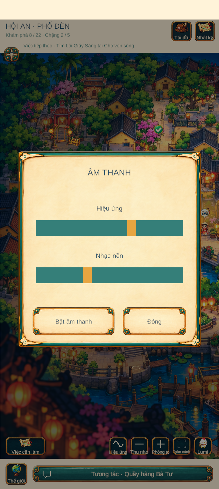
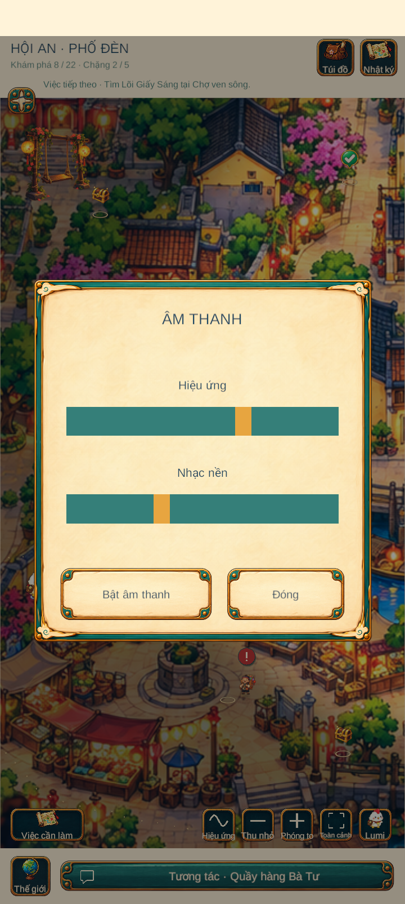
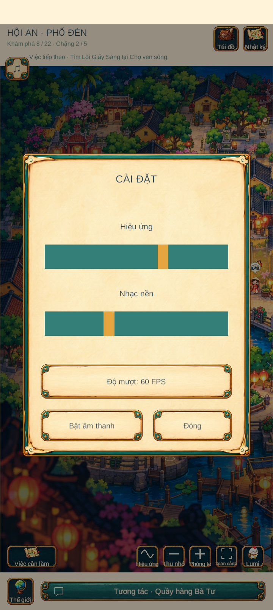
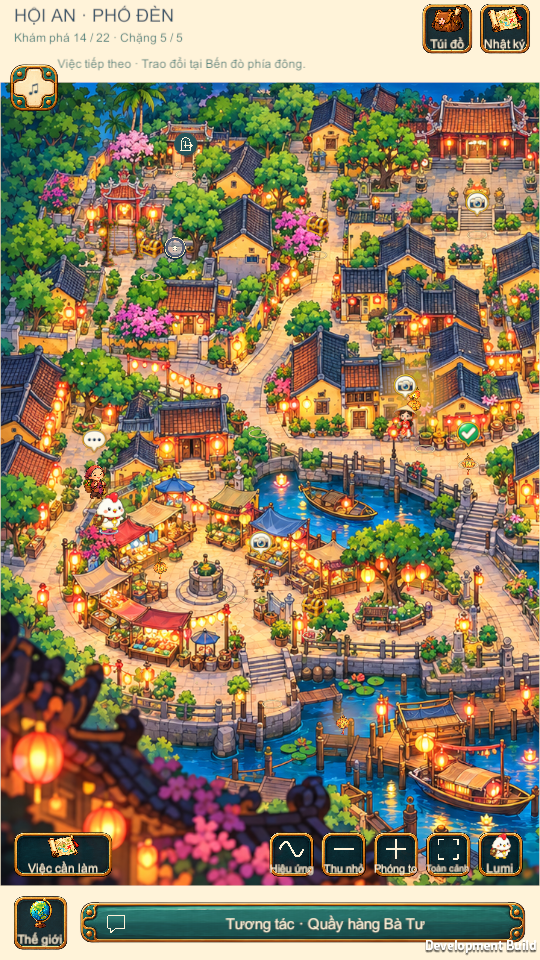
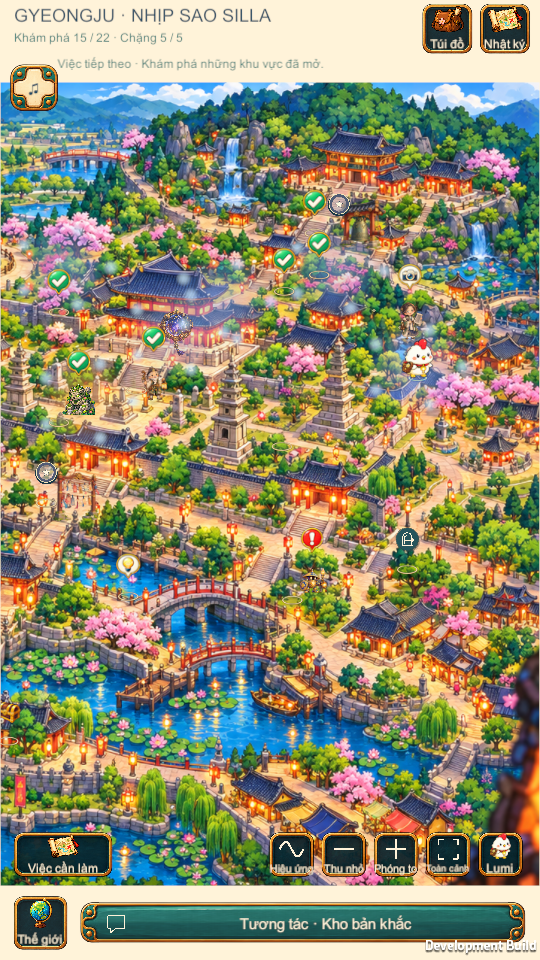
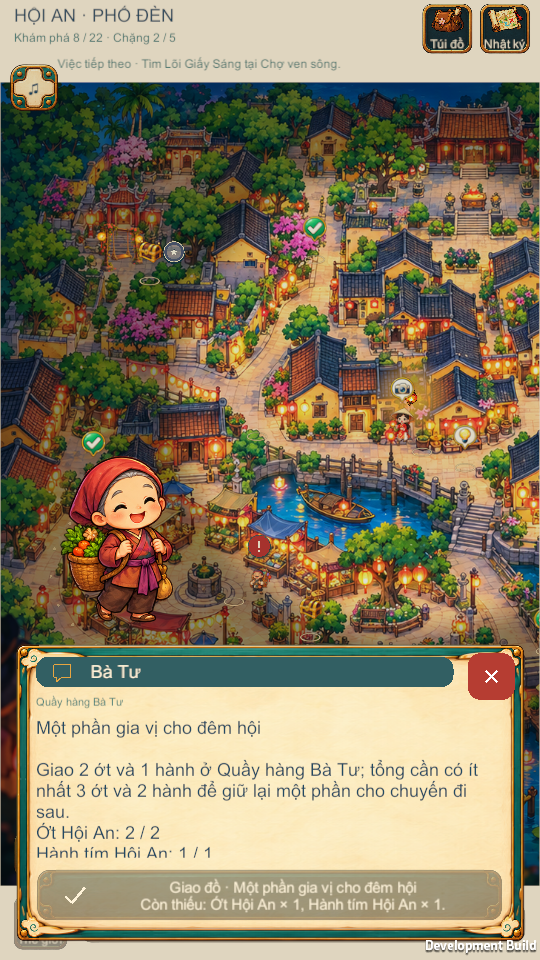

Original runtime frames. Click a frame to open its native resolution. No mockups. PC callback fixtures are labelled separately from device interaction.






Final capture did not reach the dialogue. Not an Android PASS. Source/Windows fixes are verified separately.
Open the actual final device capture